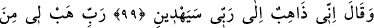

“Ateşin tabiatında yakıcılık vardır” dedi
“O şey ki tabiat olarak yakıcıdır, nasıl
Tabiatının gereğinden ayrı/uzak olur?”
Orada bulunanlardan birisi din gayretinden
“Uyan, eteğini getir ve gör” dedi
Mangalın ateşini hakîmin eteğine döktü
Mahcupluk ateşi canından koptu/çok utandı
(Velî zât) ona “Elini ateşe sok.” dedi.
“Gör bakalım ateşte hiç sıcaklık var mı?”
Felsefecinin eli ve eteği yanmayınca
O bilgisizlikten yüzü aydınlandı/kurtuldu
Tabiatı Hakk’ın emrine âmâde gördü
Canı akıl bulanıklığından kurtuldu
Eğer o ilim ona yakîn olsaydı
Onun kıssası nasıl böyle olurdu
İlim insana korku ve haşyeti yakın eyler
İnsan yakîn ile bütün hallerde daha güvendedir
99, 100. (Oradan kurtulan İbrahim:) Ben Rabbime gidiyorum. O bana doğru yolu
gösterecek. Rabbim! Bana sâlihlerden olacak bir evlat ver, dedi.
Allah Teâlâ İbrahim (a.s.)’ı ateşten kurtardıktan sonra sitem maksadıyla kavminden
kendisini terk edenlere, yahut teşvik için ehlinden kendisiyle beraber hicret edenlere
“Ben Rabbime” yani Harran yahut Bâbil diyarından, yahut Basra ile Kûfe arasında
Hürmüz denen yerden Rabbimin bana emrettiği Şam’a yahut yalnız Rabbime ibadet
edebileceğim herhangi bir yere “gidiyorum,” hicret ediyorum. “O bana doğru yolu
gösterecek.” dedi. Kuşkusuz Allah Teâlâ bir cihette olmadığı için onun zâtına gitmek
muhaldir, mümkün değildir.
Bahru’l-ulûm’da der ki: Belki de Allah Teâlâ İbrahim (a.s.)’a küfür ülkesini terkedip
kendi kıblesi olan sahrayı (kayayı) ziyaret edebileceği ve Mescid-i Haram’ı imar
edebileceği bir yere gitmesini emretmiştir. Yahut İbrahim (a.s.)’ın gideceği bu yer,
İbrahim (a.s.)’ın defnedileceği yerdir. Hz. Peygamber (s.a.)’e de Mekke’den Medine’ye
hicret etmesi emredilmişti. Bazı tarih kitaplarında İbrahim (a.s.)’ın Filistin’e
defnedildiği yazılır. Filistin, Şam ile Mısır arasındaki toprakların genel adıdır.
Filistin’in Remle, Gazze, Askalan ve başka bir çok önemli şehirleri vardır. İbrahim
(a.s.) burada “O bana doğru yolu gösterecek.” diye kesin bir dil kullanmıştır. Çünkü